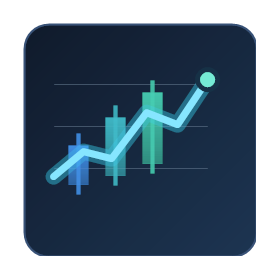

⌕
종목 검색과 관심 목록
종목명이나 티커로 찾아 관심 종목에 추가하고 관리합니다.

StockWidget관심 종목과 보유 주식의 시세, 하루 흐름과 손익을 바탕화면에서 간결하게 확인하세요.
Windows용 · 한국어 인터페이스 · 인터넷 연결 필요
관심 종목부터 계좌 보유 종목까지, 내 방식에 맞춰 확인할 수 있습니다.
종목명이나 티커로 찾아 관심 종목에 추가하고 관리합니다.
현재가, 당일 등락률과 간단한 장중 흐름을 표시합니다.
종목별 또는 여러 종목 묶음으로 바탕화면에 띄울 수 있습니다.
수동 보유 종목의 평균 매수가와 수량을 입력해 평가 손익을 확인합니다.
Open API를 연결하면 계좌 보유 종목과 손익을 표시합니다. 연결 없이도 기본 기능을 사용할 수 있습니다.
어두운 화면과 항상 위 표시 등 위젯 설정을 지원합니다.
앱은 Windows 바탕화면에서 실행되는 데스크톱 프로그램입니다.
ZIP 패키지를 내려받고 원하는 폴더에 압축을 풉니다. 실행 파일과 필요한 앱 파일이 함께 들어 있습니다.
`StockWidget.exe`를 실행하거나, PowerShell 5.1에서 `StockWidget.ps1`을 실행합니다.
종목명 또는 티커를 검색해 관심 목록에 추가하고, 원하는 위젯으로 표시합니다.
수동 보유 정보를 입력하거나, 원할 때 토스증권 Open API를 연결합니다.
현재 배포본은 Windows 데스크톱 환경을 대상으로 합니다.
관심 종목과 앱 표시 설정은 로컬 설정 파일에 저장됩니다. 토스증권 연동을 선택하면 인증 정보는 앱의 로컬 전용 설정 파일에 저장되며, 공개 저장소나 이 소개 페이지에 포함하지 않도록 관리해야 합니다.
Yahoo Finance와 네이버 금융 등 외부 데이터 제공처로 종목 조회 요청이 전송됩니다. 토스 연동을 사용할 때는 토스 Open API로 인증 및 계좌 조회 요청이 전송됩니다. 공개 배포 전에는 배포 파일에 개인 설정이나 인증 정보가 들어 있지 않은지 확인하세요.
아니요. 관심 종목 검색과 공개 시세, 수동 보유 기능은 토스 API 연결 없이 사용할 수 있습니다.
인터넷 연결을 확인하고 잠시 후 새로고침해 보세요. 외부 데이터 제공처 응답이 없거나 종목 코드가 지원되지 않으면 해당 항목의 조회가 실패할 수 있습니다.
현재 런처는 단독 실행형이 아닙니다. 배포 패키지에는 `StockWidget.exe`, `StockWidget.ps1`, `StockQuotes.ps1`, `StockDiscovery.ps1`, `StockWidget.ico`가 함께 있어야 합니다.
개인 종목 목록이나 토스 인증 정보가 포함될 수 있으므로 공유·업로드하지 마세요. 예시 설정 파일만 공개 배포에 사용하세요.
실행 파일과 필요한 앱 파일이 포함된 ZIP 패키지입니다. 개인 설정과 토스 인증 정보는 포함하지 않았습니다.